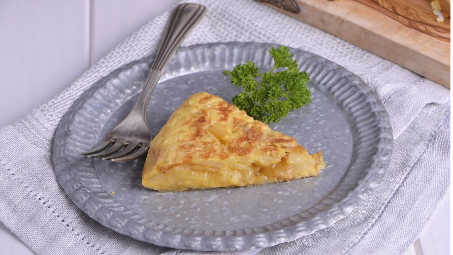
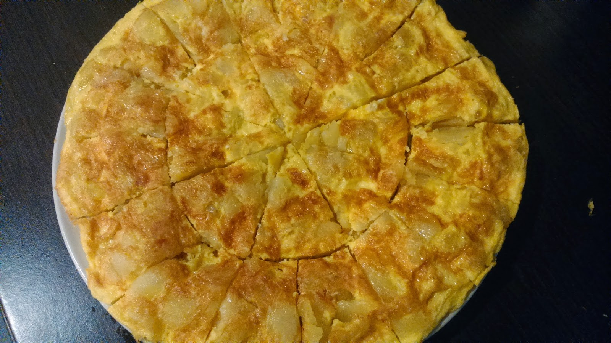
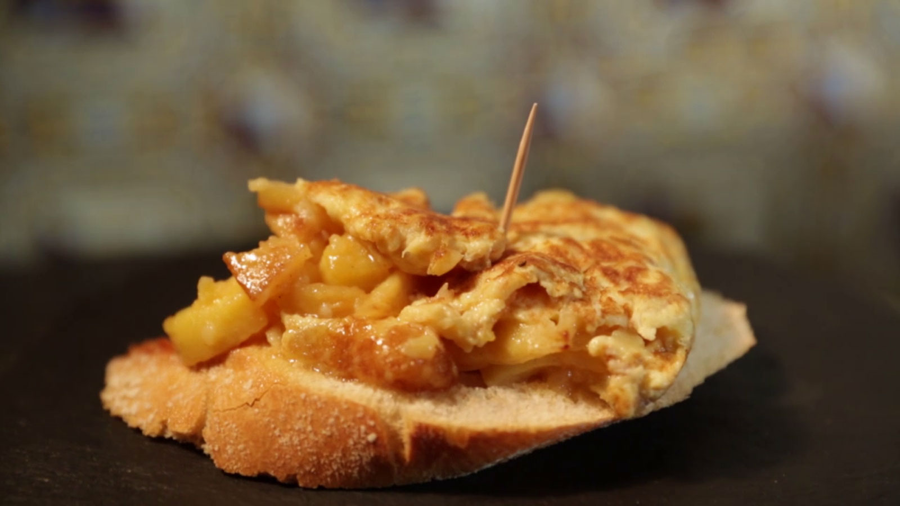
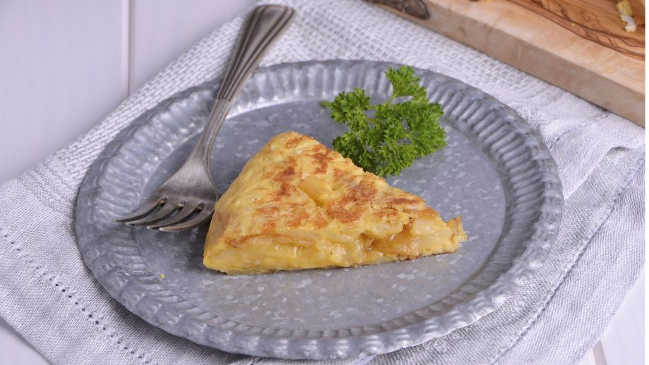
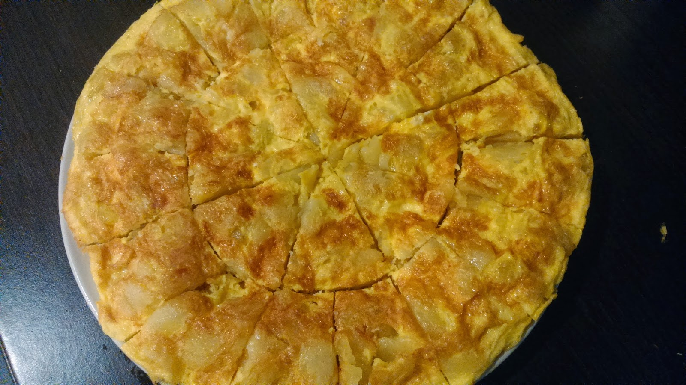
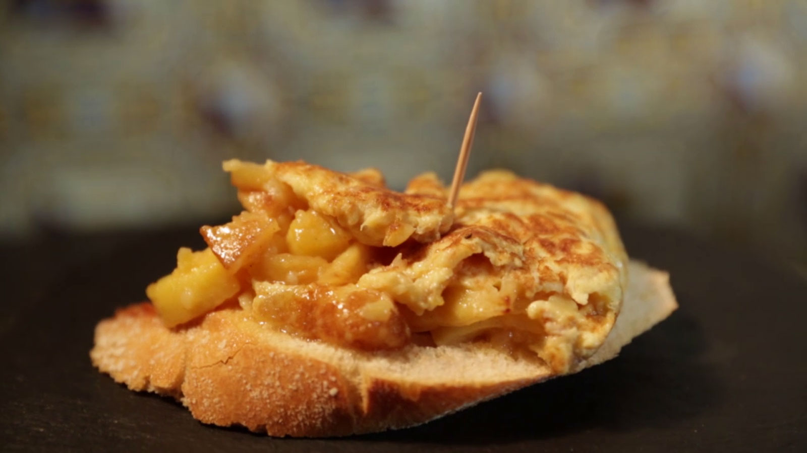

Ingredientes (4 personas)
- 6 huevos
- 1 cebolla pequeña (opcional)
- 2 vasos de aceite de oliva
- Una hoja de perejil o un ramito de romero (opcional)
- 3 patatas (600 gramos)
- Sal
- Aceite de oliva

 





Pela y pica la cebolla en dados medianos.
Si las patatas estuvieran sucias, pásalas por agua. Pélalas, córtalas por la mitad a lo largo y después corta cada trozo en medias lunas finas de 1/2 centímetros.
Introduce todo en la sartén, sazona a tu gusto y fríe a fuego suave durante 25-30 minutos.
Retira la fritada y escúrrela. Pasa el aceite a un recipiente y resérvalo. Limpia la sartén con papel absorbente de cocina.
Casca los huevos, colócalos en un recipiente grande y bátelos. Sálalos a tu gusto, agrega la fritada de patatas, cebolla y mezcla bien.
Coloca la sartén nuevamente en el fuego, agrega un chorrito del aceite reservado y agrega la mezcla. Remueve un poco con una cuchara de madera y espera (20 segundos) a que empiece a cuajarse.
Separa los bordes, cubre la sartén con un plato de mayor diámetro que la sartén y dale la vuelta.
Échala de nuevo para que cuaje por el otro lado.